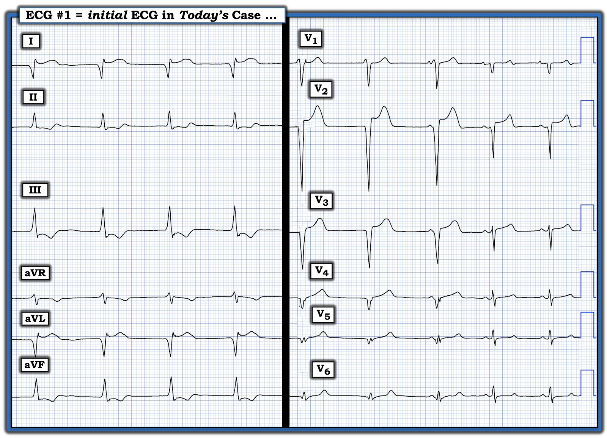
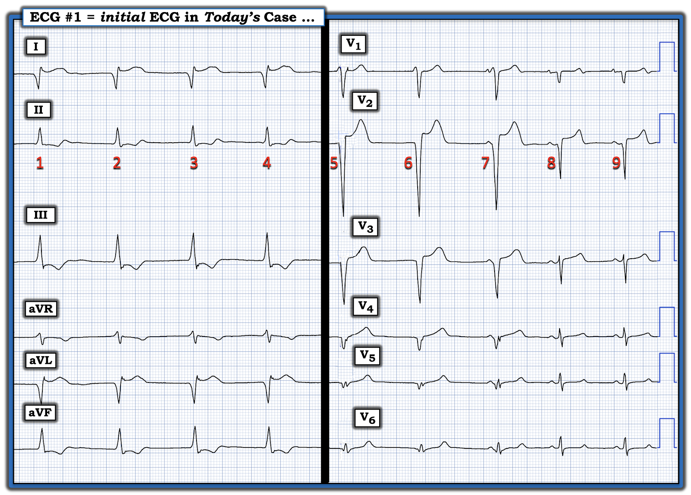
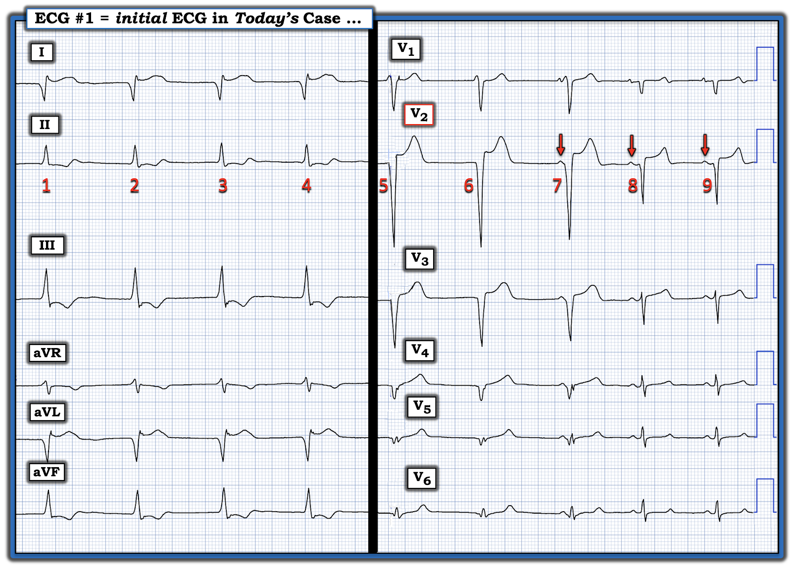
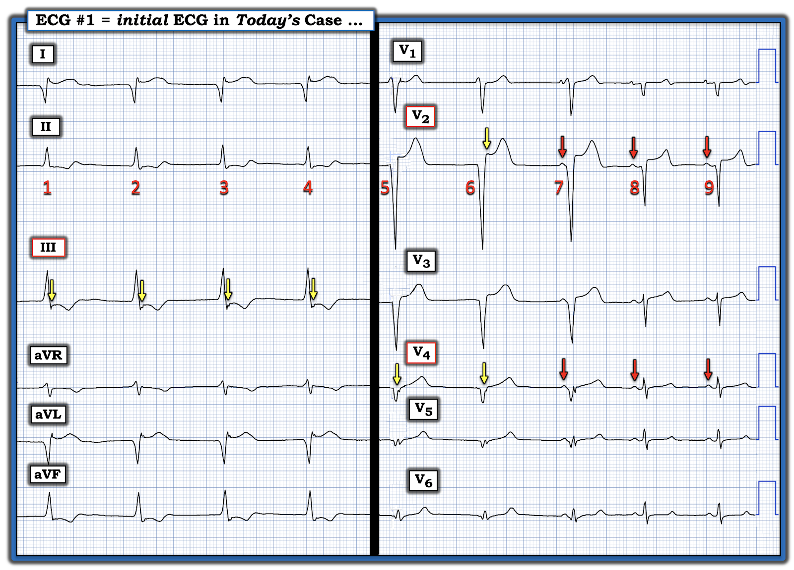
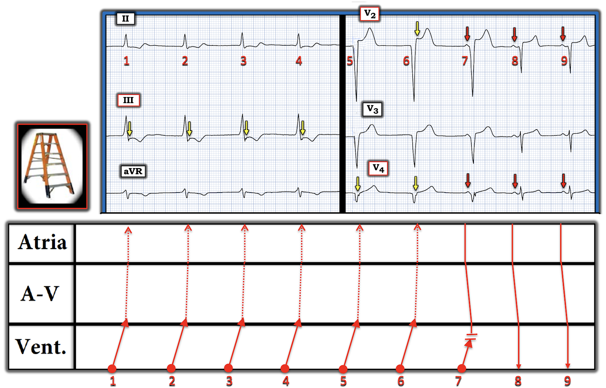
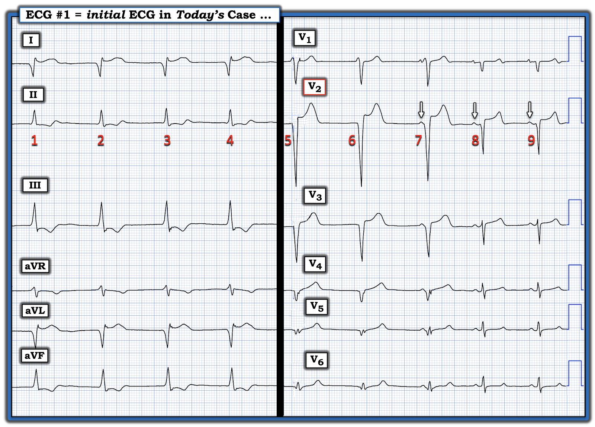
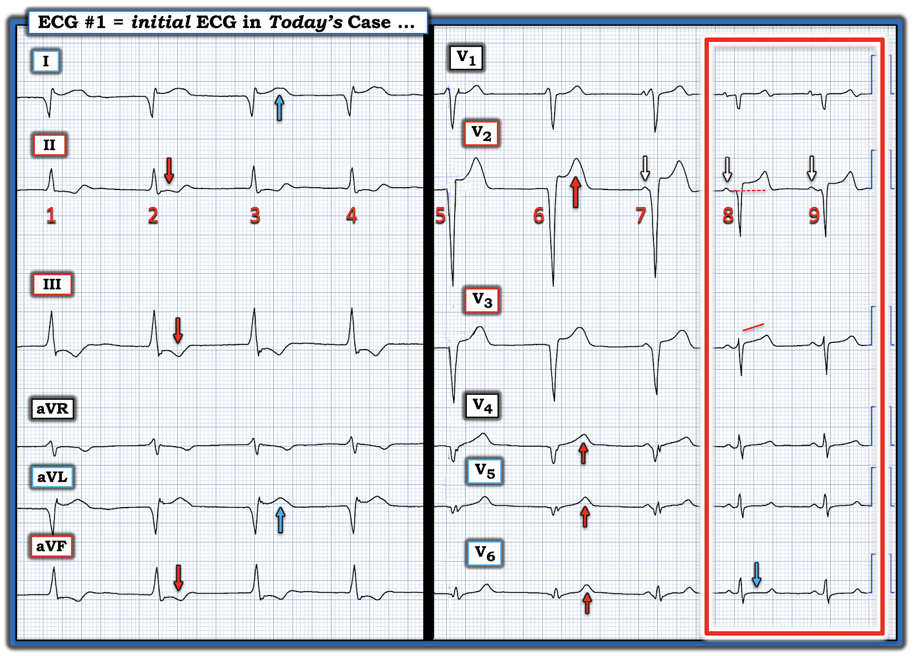
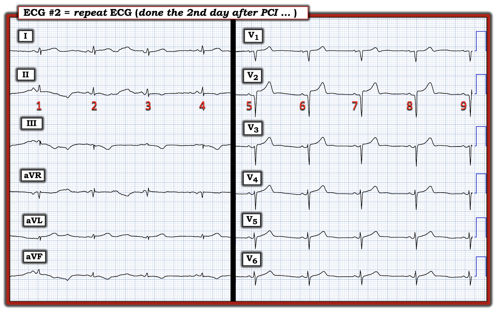
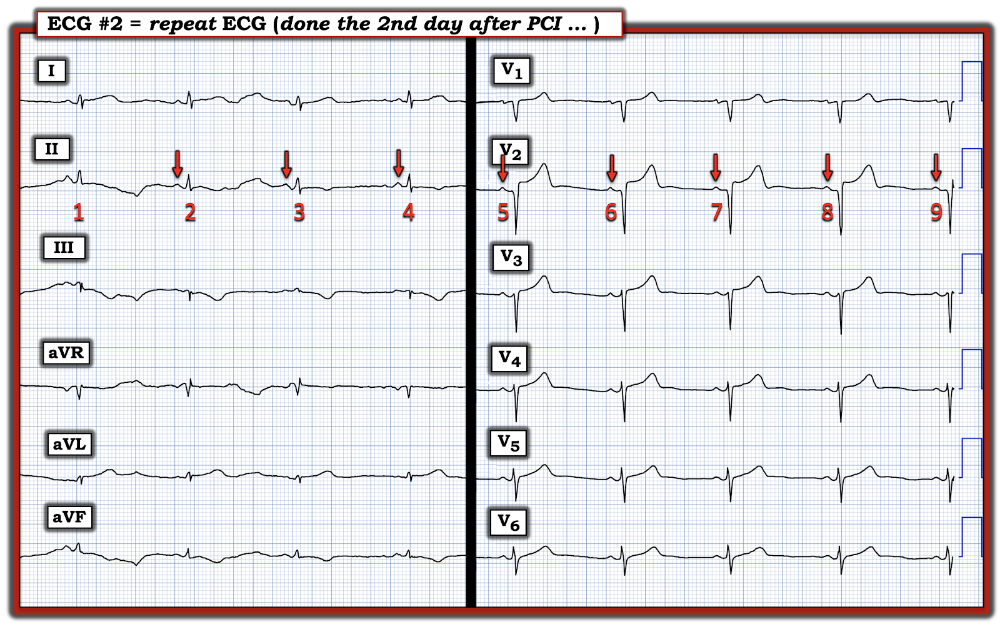

ECG Blog #550 — Đoán bối cảnh lâm sàng
Điện tâm đồ ở Hình 1 được ghi từ một người đàn ông trung niên đến khám vì CP (đau ngực – Chest Pain). Tôi được hỏi ý kiến về nhịp tim này.
CÂU HỎI:
- Đây là nhịp gì?
- Bạn chắc chắn đến mức nào về câu trả lời của mình?
- Nguyên nhân có thể gây ra nhịp này là gì?


Cách tiếp cận của tôi với bản ghi hôm nay:
Chúng ta gặp bất lợi rõ rệt ở Hình 1 khi xác định nhịp. Lý do là chúng ta chỉ thấy 9 nhát, và không có dải nhịp chuyển đạo dài. Dù vậy, vẫn có thể rút ra một số suy luận một cách chắc chắn.
- ĐIỂM THEN CHỐT (PEARL) #1: Mọi việc sẽ dễ hơn — NẾU chúng ta chỉ cần đánh số các nhát (như tôi đã làm ở Hình 2). Làm như vậy giúp chúng ta trao đổi một cách mạch lạc với đồng nghiệp về những gì đang diễn ra (đồng thời giúp chúng ta dễ nhận ra mối liên hệ giữa sóng P và các phức bộ QRS kế cận).
Hãy xem lại Hình 2:
- GỢI Ý: Hãy nhìn các chuyển đạo trước tim trước ...


==================================
Những gì chúng ta thấy ở Hình 2:
Sóng P có hiện diện trước các nhát 7,8,9 (các mũi tên ĐỎ ở Hình 3):
- Sóng P trước nhát #7 rõ ràng nằm quá gần (PR quá ngắn) để có thể dẫn truyền bình thường xuống thất. Do đó, ít nhất là với riêng nhát #7 này — có phân ly nhĩ thất (AV dissociation) (điều này đơn giản có nghĩa là sóng P trước nhát #7 không dẫn truyền hoàn toàn phức bộ QRS này).


ĐIỂM THEN CHỐT #2: Nhận ra rằng khoảng PR trước nhát #7 quá ngắn để là một nhát dẫn truyền từ xoang bình thường chính là manh mối MẤU CHỐT của nhịp hôm nay — vì nó cho chúng ta biết rằng nhát #7 phải là một nhát thoát thất!
- Ngược lại — phức bộ QRS trước các nhát #8 và 9 thì hẹp, trông rất khác với QRS của các nhát #7,8,9 — và, khoảng PR trước các nhát #8 và 9 hằng định và đủ dài để là nhát dẫn truyền từ xoang (tôi đo khoảng PR trước các nhát #7,8 là ≥0.13-0.14 — và khoảng PR có thể còn dài hơn nếu chúng ta thấy được sóng P ở chuyển đạo II).
- Điều này cho chúng ta biết rằng các nhát #5 và 6 phải là các nhát thoát thất với tần số hơi gia tốc ~55/phút (khoảng R-R giữa các nhát #5-6 và 6-7 nằm trong khoảng 5 đến 6 ô lớn).
- ĐIỂM THEN CHỐT #3: Nếu chúng ta tập trung vào chuyển đạo V3 — Chẳng phải phức bộ QRST của nhát 7 trông hơi khác so với QRST của các nhát #5 và 6 sao? (Ít nhất ở chuyển đạo V3 — QRS và sóng T của nhát #7 thấp hơn một chút so với các nhát #5 và 6). Điều này cho chúng ta biết rằng nhát #7 là một nhát hỗn hợp (fusion beat), và chứng minh rằng các nhát #5 và 6 có nguồn gốc từ thất (Xem ECG Blog #128 — để biết thêm về nhát hỗn hợp).
- LƯU Ý: Việc nhát #7 là một nhát hỗn hợp là hợp lý — vì khoảng PR trước nhát này chỉ ngắn hơn một chút so với khoảng PR của các sóng P dẫn truyền từ xoang trước các nhát #8 và 9 (như chúng ta sẽ thấy ngay sau đây trong giản đồ bậc thang (laddergram) ở Hình 5).
ĐIỂM THEN CHỐT #4:
Việc các nhát #5 và 6 là nhát thoát thất — còn được củng cố khi xem lại hình dạng QRST của các nhát #1 đến 4 ở các chuyển đạo chi:
- Lưu ý ở chuyển đạo I — phức bộ QRS bắt đầu bằng một sóng Q rất sâu và rộng! Chúng ta hầu như không bao giờ thấy một sóng lệch âm khởi đầu sâu và rộng như vậy ở chuyển đạo I (chuyển đạo phía trái) khi dẫn truyền xoang bình thường. Do đó, sóng Q khởi đầu sâu và rộng này ở chuyển đạo I gợi ý mạnh nguồn gốc thất của 4 nhát ở chuyển đạo này.
- ĐIỂM THEN CHỐT #5: Hãy lưu ý sóng lệch âm tinh tế-nhưng-có-thật ở cuối QRS trong mỗi chuyển đạo của 3 chuyển đạo dưới (các mũi tên VÀNG ở Hình 4 đánh dấu sóng lệch âm này ở chuyển đạo III — nhưng sóng lệch âm tận tương tự cũng thấy ở các chuyển đạo II và aVF). Khía âm tận này nhiều khả năng phản ánh dẫn truyền ngược dòng của sóng P từ các nhát thất #1,2,3,4.
- Tôi nghi ngờ dẫn truyền ngược dòng vẫn tiếp diễn ở các chuyển đạo trước tim, và được thấy sau các nhát #5 và 6 — cho đến khi nhịp sóng P xoang nền tăng tốc nhẹ cho phép các sóng P có mũi tên ĐỎ trước các nhát #8 và 9 bắt lại thất bằng các nhát dẫn truyền từ xoang #8 và 9 (Xem giản đồ bậc thang bên dưới ở Hình 5).




Nhận định của tôi: Tôi nghi ngờ nhịp ở Hình 5 bắt đầu bằng 7 nhát AIVR (nhịp tự thất gia tốc – Accelerated IdioVentricular Rhythm) với tần số ~55-60/phút — và kết thúc bằng 2 nhát bắt được từ xoang ( = các nhát #8 và 9).
- 6 nhát thất đầu tiên biểu hiện sóng P ngược dòng (các đường chấm ĐỎ trên giản đồ bậc thang đi ngược trở lại tâm nhĩ).
- Tần số xung động xoang tăng nhẹ cho phép các sóng P có mũi tên ĐỎ bắt lại thất với các nhát #8 và 9.
- Khoảng PR quá ngắn cùng hình dạng trung gian của phức bộ QRS và của sóng T ở nhát #7 — gợi ý đây là một nhát hỗn hợp. Việc sóng P có mũi tên ĐỎ thứ 1 này đến thất sớm đã ngăn dẫn truyền ngược dòng của nhát thất #7 — nhờ đó sóng P có mũi tên ĐỎ thứ 2 có thể “bắt” thất bằng một nhát dẫn truyền từ xoang.
==================================
Tổng hợp lại tất cả:
- Bệnh nhân hôm nay đến khám vì CP.
- Nhịp nền trên điện tâm đồ ban đầu có vẻ là nhịp chậm xoang và loạn nhịp xoang, bị gián đoạn từng lúc bởi AIVR với tần số ~55-60/phút.
- ĐIỂM THEN CHỐT #6: Sự kết hợp AIVR ở một bệnh nhân đến khoa cấp cứu (ED) vì CP — thường gặp trong quá trình tiến triển của một OMI cấp ( = nhồi máu cơ tim do tắc – Occlusion-based Myocardial Infarction). Vì vậy — chúng ta cần quay lại và XEM LẠI điện tâm đồ ban đầu của ca hôm nay, tìm xem có những manh mối điện tâm đồ tinh tế của một OMI mới xảy ra hay không (cần nhớ rằng các thay đổi ST-T cấp của OMI có thể khó nhận ra khi có một nhịp thất như AIVR).
ĐIỂM THEN CHỐT #7: Khi AIVR xuất hiện cùng với một OMI đang tiến triển (điều này đặc biệt có khả năng khi bệnh nhân đến khám vì CP, như ca hôm nay) — nó thường là một rối loạn nhịp do tái tưới máu (Xem ECG Blog #108 — về những điều cơ bản của AIVR).
- Vì vậy — đối chiếu từng điện tâm đồ liên tiếp với sự hiện diện và mức độ nặng của CP trở nên đặc biệt quan trọng để hiểu trình tự diễn biến (và để xác định động mạch "thủ phạm" nhiều khả năng đang thông hay tắc vào thời điểm ghi một điện tâm đồ nhất định).
- Ở ca hôm nay — chúng ta muốn biết LIỆU CP của bệnh nhân này đã giảm (hoặc hết) vào thời điểm ghi điện tâm đồ ban đầu hay chưa. Nếu triệu chứng đã nhẹ hơn vào thời điểm ghi điện tâm đồ ban đầu này, trước khi có bất kỳ điều trị nào — điều đó gợi ý đã có tái tưới máu tự phát của động mạch "thủ phạm" (khi đó các dấu hiệu điện tâm đồ của nhồi máu cấp có thể đặc biệt tinh tế!).
Ở Hình 6 — tôi đã đặt lại điện tâm đồ ban đầu của ca hôm nay.
- Hãy XEM LẠI điện tâm đồ ban đầu này — đặc biệt chú ý tìm các dấu hiệu tinh tế của nhồi máu mới xảy ra.


==================================
Các dấu hiệu điện tâm đồ tinh tế của nhồi máu mới xảy ra:
Dù có AIVR (và khả năng đã có tái tưới máu tự phát) — tôi cho rằng có những dấu hiệu điện tâm đồ tinh tế của nhồi máu mới xảy ra trên điện tâm đồ ban đầu của ca hôm nay (Xem Hình 7 có chú thích bên dưới):
- Trước tiên tôi tập trung vào 2 nhát dẫn truyền từ xoang — vì đánh giá thay đổi cấp của ST-T đáng tin cậy hơn khi xem ở các nhát dẫn truyền bình thường so với khi xem ở các nhát thất ( = các nhát #8 và 9 — trong hình chữ nhật ĐỎ ở Hình 7).
- Mức ST chênh lên ở chuyển đạo V2 của các nhát #8,9 có vẻ tăng không tương xứng so với độ sâu vừa phải của sóng S ở các nhát dẫn truyền từ xoang này.
- Đoạn khởi đầu ST ở chuyển đạo V3 có vẻ thẳng đuỗn ở các nhát dẫn truyền từ xoang #8,9.
- Có ST thẳng đuỗn kèm chênh xuống nhẹ ở chuyển đạo V6 (mũi tên XANH ở chuyển đạo này) — chuyển đạo trước tim phía bên.
Xin nhấn mạnh: Thay đổi ST-T cấp có thể đôi khi thấy được ở các nhát thất. Chỉ có điều những thay đổi này thường tinh tế và khó nhận ra hơn so với khi thay đổi cấp xuất hiện ở các nhát dẫn truyền bình thường:
- Ở các chuyển đạo chi (cho thấy 4 nhát thất liên tiếp) — sóng ST-T chênh xuống và "đồ sộ" quá mức ở mỗi chuyển đạo dưới trông không tương xứng và "bất thường" so với điều tôi chờ đợi khi biên độ QRS ở II,III,aVF chỉ vừa phải (các mũi tên ĐỎ ở các chuyển đạo này).
- Với hình ảnh ST-T như vậy ở các chuyển đạo dưới — sóng T dương chênh lên và quá lớn ở các chuyển đạo I và aVL biểu hiện hình ảnh đối xứng soi gương của những gì chúng ta thấy ở các chuyển đạo dưới (các mũi tên XANH ở các chuyển đạo I và aVL).
- Ở các chuyển đạo trước tim — sóng ST-T ở chuyển đạo V2 có vẻ lớn không tương xứng, với điểm J gập góc và chênh lên quá mức ở các nhát thất. Đặc biệt ở các chuyển đạo V4,V5,V6 — sóng T trông lớn không tương xứng so với kích thước rất nhỏ của QRS ở các chuyển đạo trước tim phía bên này (các mũi tên ĐỎ ở các chuyển đạo trước tim nêu trên cho các nhát thất #5,6,7).
Nhận định: Các dấu hiệu tinh tế nêu trên ở nhiều chuyển đạo của Hình 7, ở bệnh nhân có CP và AIVR từng lúc này, gợi ý hình ảnh "xoáy" trước tim (Precordial Swirl) do tắc LAD cấp mới xảy ra (Xem ECG Blog #380 — để ôn lại về xoáy trước tim).
- Xin nhấn mạnh: Các dấu hiệu điện tâm đồ nêu trên rất tinh tế! Nhưng đặc biệt NẾU CP của bệnh nhân này đã giảm (hoặc hết) vào thời điểm ghi điện tâm đồ ở Hình 7 — chúng ta chờ đợi các dấu hiệu điện tâm đồ ít rõ ràng hơn so với những gì có lẽ đã thấy nếu đau ngực dữ dội vẫn còn.


==================================
KẾT LUẬN CA BỆNH:
Các bác sĩ điều trị đã lo ngại một cách thích đáng trước bệnh sử CP mới xuất hiện của bệnh nhân này cùng với điện tâm đồ ban đầu của ca hôm nay.
- Thông tim được thực hiện kịp thời — và cho thấy tắc cấp LAD đoạn gần, có thể can thiệp bằng PCI.
- Điện tâm đồ ghi lại vào ngày hôm sau, sau khi PCI thành công, được trình bày bên dưới ở Hình 8.
CÂU HỎI:
- Bạn đọc điện tâm đồ ghi lại ở Hình 8 như thế nào?
- Các nhát #8 và 9 ở điện tâm đồ #2 so với các nhát #8 và 9 ở Hình 7 như thế nào?
- Vì sao điện thế ở Hình 8 có thể thấp như vậy?


==================================
TRẢ LỜI:
AIVR đã hết — với sự tái lập nhịp xoang trên điện tâm đồ ghi lại sau khi PCI thành công (các mũi tên ĐỎ cho thấy nhịp chậm xoang ~55/phút trong suốt bản ghi ở Hình 9).
- Lưu ý rằng cả 5 nhát dẫn truyền từ xoang ở các chuyển đạo trước tim của điện tâm đồ ghi lại này trông giống hệt các nhát dẫn truyền từ xoang #8 và 9 trên điện tâm đồ ban đầu của ca hôm nay.
- Lưu ý rằng QRS ở Hình 9 nay hẹp ở mọi nhát — trong khi QRS rộng ở các nhát thất ở Hình 6. Sóng Q khởi đầu rộng ở chuyển đạo I — vốn đã gợi ý cho chúng ta sự hiện diện của AIVR trên điện tâm đồ ban đầu — nay không còn nữa.
- Có tăng tiến sóng R kém ở các chuyển đạo trước tim của Hình 6 (có phức bộ QS ở các chuyển đạo V1,V2 — và không bao giờ có chuyển tiếp sang sóng R ưu thế). Điều này phù hợp với nhồi máu thành trước mới xảy ra ở bệnh nhân này.
- Bản ghi sau PCI này cũng đáng chú ý vì điện thế thấp lan tỏa (không có sóng R nào vượt quá 5 mm ở các chuyển đạo chi — kèm biên độ QRS nói chung cũng giảm ở các chuyển đạo trước tim). Như đã nêu trong các ca khác trên ECG Blog này — phát hiện điện thế thấp ở bệnh nhân mới bị nhồi máu có thể là dấu hiệu của "choáng" cơ tim (myocardial stunning), kèm giảm cung lượng tim (Xem ECG Blog #272 — để biết thêm về các nguyên nhân gây điện thế thấp).


Suy nghĩ cuối cùng:
Điều thường gặp thì hay gặp. Nhận ra AIVR ở một bệnh nhân đến khám vì CP là một manh mối quan trọng về khả năng đã có nhồi máu mới xảy ra. Điều này nên thúc đẩy:
- Chú ý đến chi tiết bệnh sử của bệnh nhân — cố gắng đối chiếu chặt chẽ sự hiện diện và mức độ nặng tương đối của CP với thời điểm ghi từng điện tâm đồ. Nhận ra AIVR vào lúc CP của bệnh nhân đã giảm hoặc hết là một manh mối quan trọng cho thấy có thể đã xảy ra tái tưới máu tự phát.
- Các dấu hiệu điện tâm đồ của nhồi máu mới xảy ra có thể đặc biệt tinh tế sau tái tưới máu tự phát — như có lẽ đã xảy ra với điện tâm đồ ban đầu của ca hôm nay.
- Phải thừa nhận rằng các dấu hiệu điện tâm đồ của nhồi máu mới xảy ra ở Hình 7 rất tinh tế! Dù vậy — các dấu hiệu tinh tế này trở nên dễ nhận ra hơn nhiều khi bạn biết rằng sự kết hợp CP và AIVR thường gặp sau nhồi máu mới xảy ra (và khi bạn biết rằng các manh mối điện tâm đồ có thể rất tinh tế nếu CP của bệnh nhân đã giảm hoặc hết vào thời điểm ghi điện tâm đồ ban đầu).
==================================
Lời cảm ơn: Xin cảm ơn Ali Ibrahim (đến từ Tikrit, Iraq) đã cho phép tôi sử dụng ca bệnh và các bản ghi này.
==================================